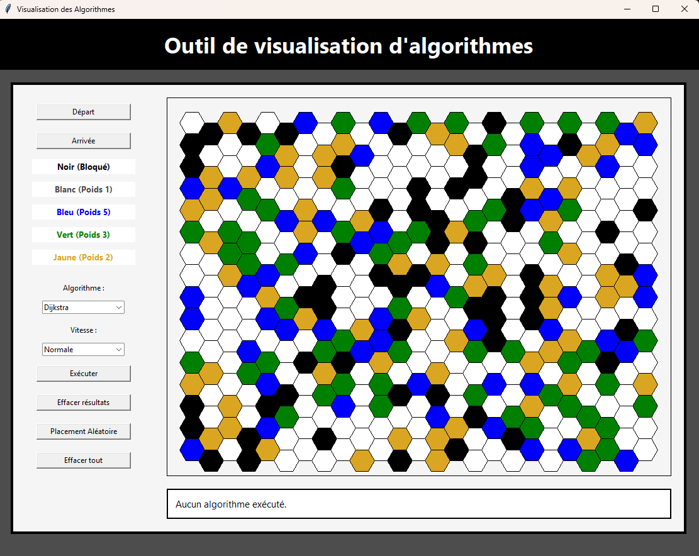
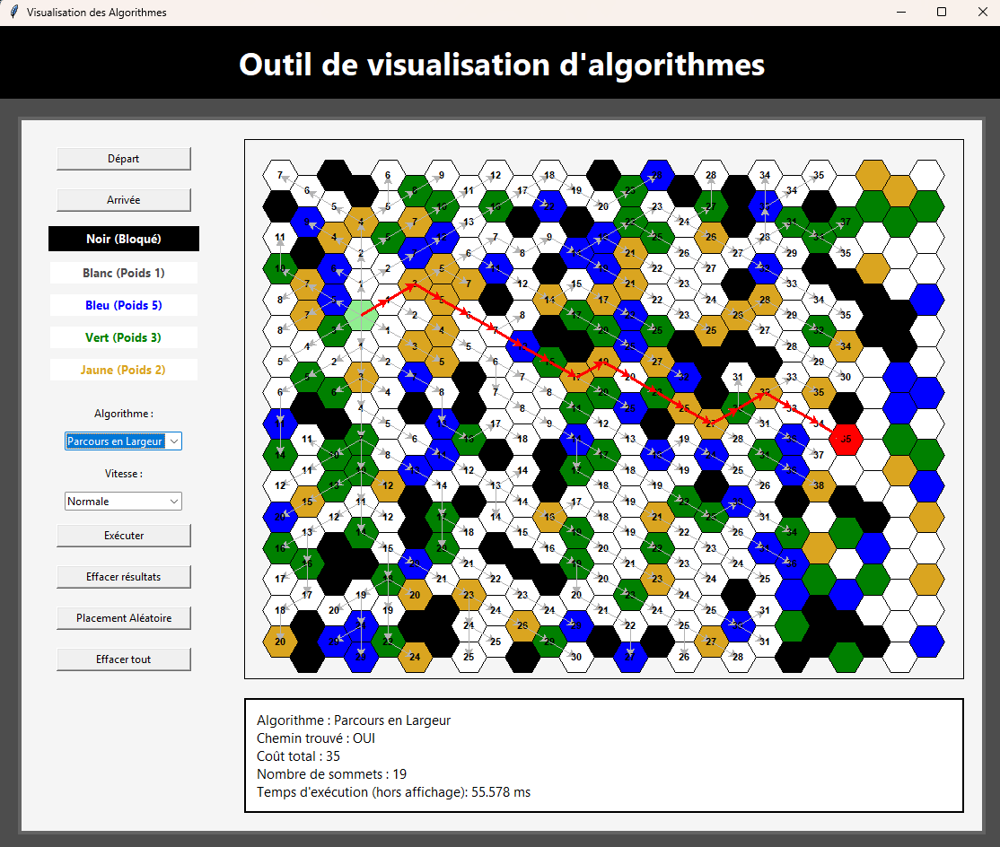
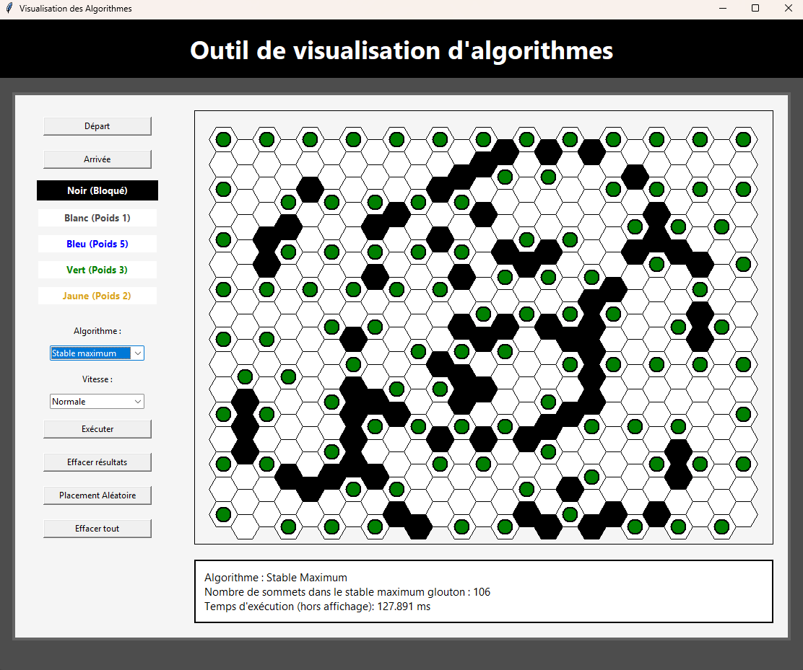
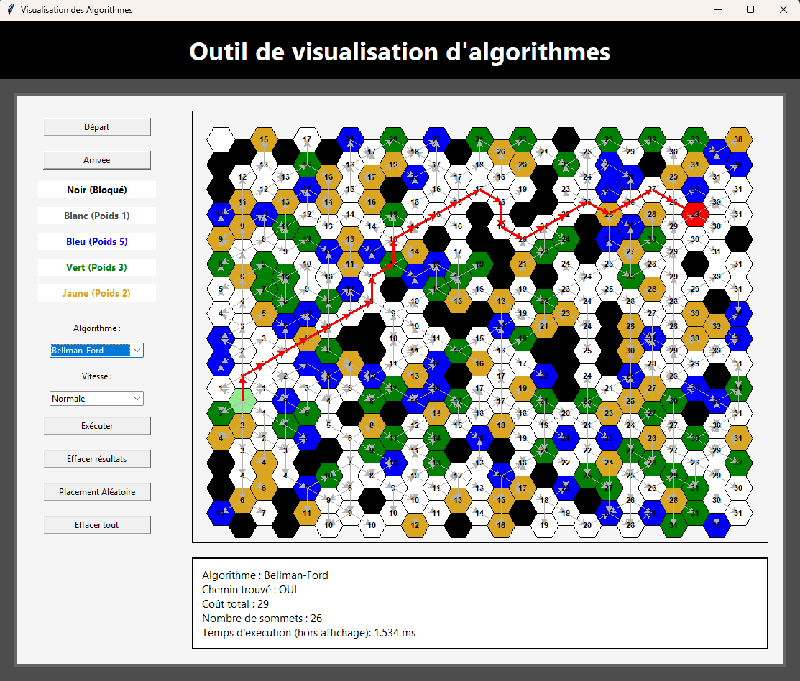

Présentation du projet
Ce projet consiste en la conception et la réalisation d'une application interactive permettant de visualiser le fonctionnement de plusieurs algorithmes classiques appliqués à des graphes. L'objectif pédagogique est de rendre accessible et compréhensible l'exécution de ces algorithmes, souvent abstraits, grâce à une interface animée et progressive.
L'application a été entièrement développée en Python en utilisant la bibliothèque Tkinter pour l'interface graphique. L'utilisateur peut construire son propre graphe, choisir un algorithme, et observer son déroulement étape par étape avec des animations visuelles mettant en évidence les nœuds et arêtes traités.
Algorithmes implémentés
- Parcours en largeur (BFS) — exploration niveau par niveau
- Parcours en profondeur (DFS) — exploration récursive
- Algorithme de Dijkstra — plus court chemin pondéré
- Algorithme de Kruskal — arbre couvrant minimal
- Détection de cycles dans un graphe
Fonctionnalités
- Parcours en largeur (BFS) — exploration niveau par niveau
- Parcours en profondeur (DFS) — exploration récursive
- Algorithme de Dijkstra — plus court chemin pondéré
- Algorithme A* — recherche de chemin optimisée avec heuristique
- Algorithme de Bellman-Ford — plus court chemin avec gestion des poids négatifs
- Algorithme de Kruskal — arbre couvrant minimal
- Algorithme de Prim — construction d’un arbre couvrant minimal
- Algorithme Stable Max — sélection itérative du maximum stabilisé
- Coloration gloutonne — attribution minimale de couleurs aux sommets
Captures d'écran




Ce que j'ai appris
Ce projet m'a permis d'approfondir ma compréhension des algorithmes de graphes en les implémentant moi-même, et de maîtriser la bibliothèque Tkinter pour créer des interfaces dynamiques. J'ai également travaillé sur la séparation logique entre le modèle (le graphe et ses algorithmes) et la vue (l'affichage animé), m'initiant ainsi aux bonnes pratiques d'architecture logicielle.